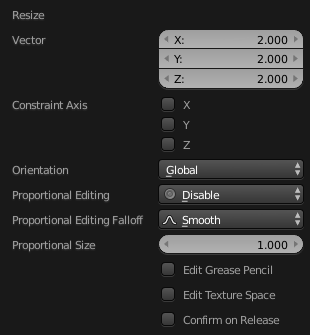
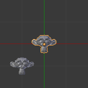

Undo & Redo¶
The tools listed below will let you roll back an accidental action, redo your last action, or let you choose to recover to a specific point, by picking from a list of recent actions recorded by Blender.
Undo¶
Reference
| Mode: | All Modes |
|---|---|
| Menu: | |
| Hotkey: | Ctrl-Z |
If you want to undo your last action, just press Ctrl-Z.
See also
Editing Preferences section on undo to change defaults.
Redo¶
Reference
| Mode: | All Modes |
|---|---|
| Menu: | |
| Hotkey: | Shift-Ctrl-Z |
To roll back the Undo action, press Shift-Ctrl-Z.
Adjust Last Operation¶
Reference
| Mode: | All Modes |
|---|---|
| Menu: | |
| Hotkey: | F9 |
After an operation is complete you can tweak the parameters of the operation afterwards. In editors that support it, there is a “head-up display” panel in the bottom left based on the last performed operation; dependent on mode and context. Alternatively, you can create a pop-up with F9 does the same thing.
For example, if your last operation was a rotation in Object Mode, Blender will show you the last value changed for the angle (see Fig. Rotation (Object Mode, 60 degrees). left), where you can change your action back completely by typing Numpad0. There are other useful options, based on the operator, and you cannot only Undo actions, but change them completely using the available options.
If you are in Edit Mode, Blender will also change its contents based on your last action taken. In the second example (at the right), the last operation was a Move in object mode; but a Scale on a Face in Edit mode, and, as you can see, the contents of Adjust Last Operation are different, because of the mode (Edit mode) (See Fig. Scale (Edit Mode, Resize face). right).

Rotation (Object Mode, 60 degrees). |

Scale (Edit Mode, Resize face). |
{kind=link}
Tip
Some operations produce particularly useful results by using Adjust Last Operation. For example, adding a Circle in the 3D Viewport; if you reduce the Vertices to three, you get a perfect equilateral triangle.
Tip
The Adjust Last Operation region can be hidden by
Undo History¶
Reference
| Mode: | All Modes |
|---|---|
| Menu: |

The Undo History menu.
There is also an Undo History of the last actions taken, recorded by Blender.
First positions correspond to most recent actions. A small icon of an eye next to one of the entries indicates the current status. Rolling back actions using the Undo History feature will take you back to the action you choose. Much like how you can alternate between going backward in time with Undo and then forward with Redo, you can hop around on the Undo timeline as much as you want as long as you do not make a new change. Once you do make a new change, the Undo History is truncated at that point. Selecting one of the entries in the list takes the current status to that position.
Repeat Last¶
Reference
| Mode: | All Modes |
|---|---|
| Panel: | |
| Hotkey: | Shift-R |
The Repeat Last feature will repeat your last action when you press Shift-R.
In the example Images below, we duplicated a Monkey mesh, and then we moved the Object a bit. Using repeat Shift-R, the Monkey was also duplicated and moved.

Suzanne. |

After a Shift-D and move. |

After a Shift-R. |
Repeat History¶
Reference
| Mode: | All Modes |
|---|---|
| Menu: |

The Repeat History menu.
The Repeat History feature will present you a list of the last repeated actions, and you can choose the actions you want to repeat. It works in the same way as the Undo History, explained above, but the list contains only repeated actions.
Important
When you quit Blender, the complete list of user actions will be lost, even if you save your file before quitting.
See also
Troubleshooting section on Recovering your lost work.